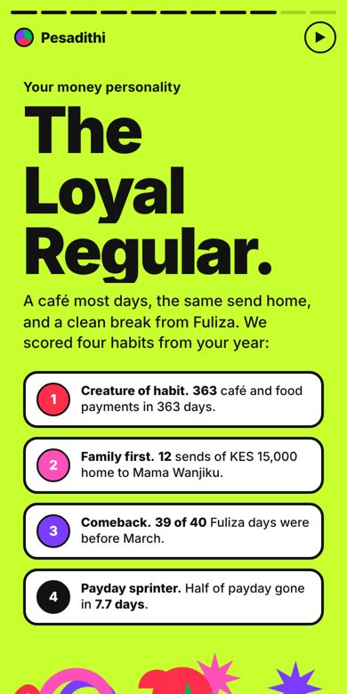
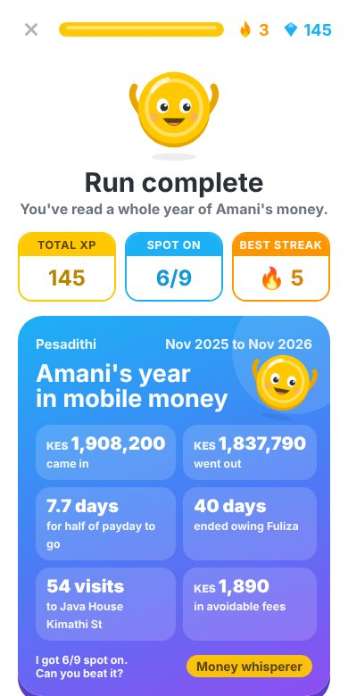
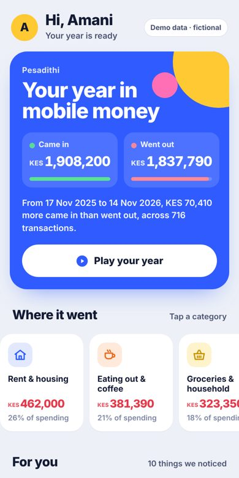
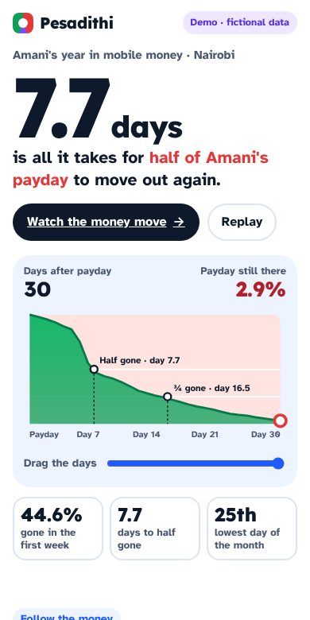
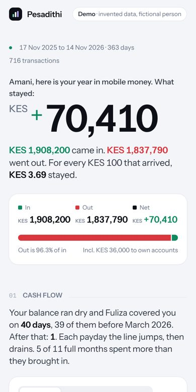

Each concept was built alone by a designer channelling a different product culture, then iterated over three to six rounds of screenshots. They share one data set and the same rules: money in is green, money out is red, no banned fonts, no Safaricom logos. Open them on your phone for the full effect.




